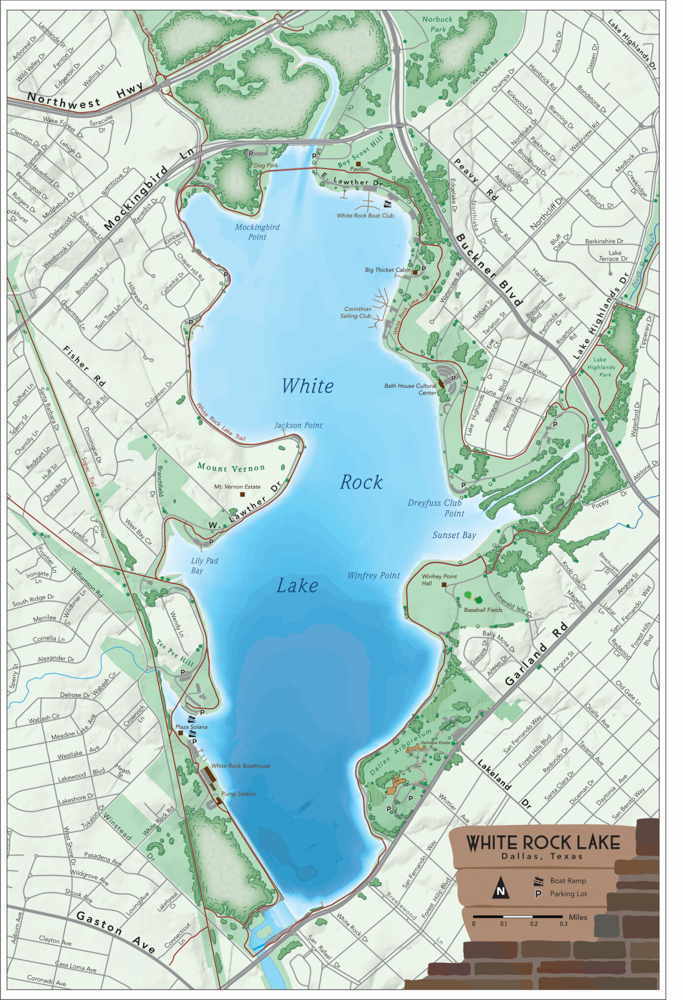
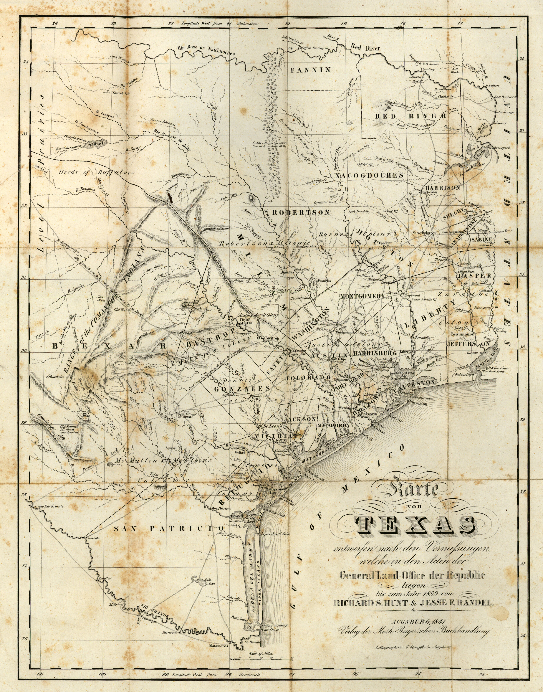
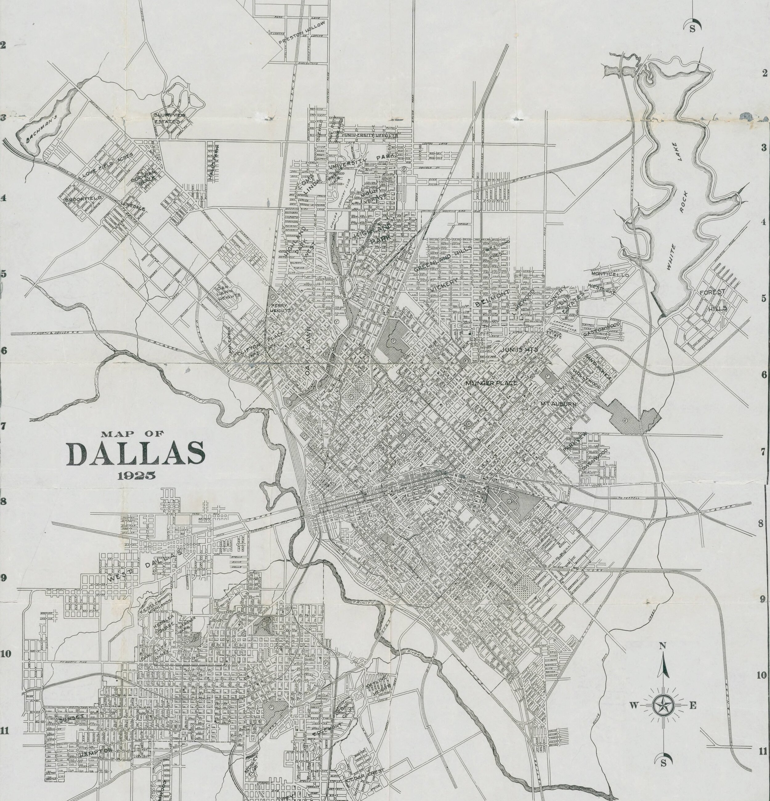

SITE ONE :: ANCIENT DALLAS
Head to this location to begin your tour.
WInfrey Point
950 E Lawther Dr, Dallas, TX 75218
Once you’ve arrived, press play on the audio link below. Feel free to scroll the information below as you listen. Feel free to drive around and look around the lake as we talk about its history.
AFTER YOU’VE LISTENED…
Optional Next Steps.
Below are a few sites that may interest you. Feel free to check them out, or move on to site number two.
See more pictures and information about the history of White Rock Lake.
African American / Pioneer Cemeteries
A brief audio tour of some nearby cemeteries dating back to the 1700’s
A brief audio tour of what used to be a town of freed enslaved people
A brief audio tour of the house that hosted the first Young Life Club
OTHER AREA POINTS OF INTEREST
Flag Pole Hill - 8149 Doran Cir, Dallas, TX 75238
A park designed for accessibility for kids of all abilities.
The Arboretum - 8525 Garland Rd, Dallas, TX 75218
A beautiful lakeside park and botanical garden. (admission is not free)
Site Number 2 :: MODERN DALLAS

Winfrey Point was completed in 1942. It was offered as the solution to the elimination of private property along the coast of the lake. Having a public rental facility allowed the city to remove and destroy all private buildings along the lake.
CCC + Nazis + SMU STUDENTS
The U.S. Army had built barracks near Winfrey Point for the Civilian Conservation Corps in 1935. Dozens of otherwise impoverished American men ages 18-24 lived in the barracks and worked for the conservation corps, earning $40 a month, of which $22 was sent directly to their families. The corps built many of the lake’s amenities, including Sunset Inn, the picnic area at Flagpole Hill and the Big Thicket building. The Corps also installed concrete bollards around the lake, which are still in use today; it began construction on the Winfrey Point building before the United States entered World War II.
Not long after World War II began, the CCC program came to an end. The old CCC camp was used by the US Army Air Corps as an induction center where many young Dallasites attended boot camp before shipping overseas. In 1944, the Army converted the boot camp to a prisoner-of-war camp to house 300 German prisoners captured in North Africa, who were members of Gen. Rommel's Afrika Corps. POWs from those battles were sent to Texas because of standards set during the 1929 Geneva Convention, requiring that POWs be held in a climate similar to the one they had been captured in. Since the boot camp was not enclosed, the prisoners were provided barbed wire and asked to build an 8-foot fence around their compound. The POW camp was deactivated in 1945 and deeded to the City of Dallas in 1946 for a nominal sum. SMU used the barracks as housing for approximately 250 veterans who attended school on the GI Bill following the war. The buildings were removed after the students left in 1947.
http://www.cscsailing.org/club_history.html
http://www.watermelon-kid.com/places/wrl/wrl.htm
CCC Camp in 1941, four years before it became a POW Camp
Winfrey Point in 2020. The place where the camp was is now baseball fields. Only the fire hydrant remains.
Dear Dallas,
“Who can help me?”
“Formerly POW No. 44.864”
Below is an actual letter from a Nazi POW who loved his time in Dallas at White Rock so much that he was trying to make his way back. He sent this letter to the DMN in 1951 asking for work. He says that while in NY he even tried to escape while being shipped back to Germany so that he could stay in Texas.
SWIMMING AT WHITE ROCK
The bathing beach at White Rock was popular for decades. In the early years, it was treated as a swimming pool, and staff would go out in a boat to chlorinate the lake. After a few years, a chlorination pipe was laid from the bathhouse to the lake.
Years before it closed, “the popularity of White Rock Beach began to decline. It was not a very dependable swimming place. In fact, it was just a recreation center. You know, go see and be seen and play in the sand,” L.B. Houston (director of the Parks and Recreation Department director from 1939-72) said in his oral history. “Sanitation was always questioned.”
When White Rock beach closed, swimming’s modern era, which began in ’45, was just evolving in Dallas, progressing during a time of desegregation and accompanying unrest.
In Dallas, no written rule of racial segregation at park property existed. Rather, segregation was socially enforced, according to the park department’s centennial history. “Black citizens risked harassment or worse for using white facilities.”
Aside from White Rock and other lakes, a couple of large municipal pools served Dallas swimmers in the early 1900s.
The nearest pool for black residents of Northeast and East Dallas was Griggs Park located south of Southern Methodist University, almost to Downtown Dallas. Prior to 1924 it was called Hall Street Negro Park and was renamed for Rev. Allen Griggs, a freed slave who became a minister and newspaper publisher.
Imbalance in amenities grew increasingly evident over the years.
A 1944 Dallas Morning News article reported that the city offered 60 acres of park for its 60,000 black residents. In contrast, 5,000 acres were reserved for its 320,000 white citizens.
A trade magazine called Amusement Business noted in 1961 that Dallas desegregated parks, golf courses and other recreational facilities but explicitly left public pools out of their agreement with civil rights leaders.
“We could see the time when racially mixed swimming would be with us,” Houston said. “We had the feeling that the very last thing that white people would tolerate would be mixed swimming. We thought it would be dangerous, you know, perhaps mob violence.”
https://lakehighlands.advocatemag.com/2016/06/desegregation-shaped-dallas-public-pool-system-photos/
https://flashbackdallas.com/2016/07/04/4th-of-july-at-white-rock-lake-1946/
July 4th, 1946
(1884) A Sunday Afternoon On The Island Of La Grande Jatte is a painting by Georges Seurat. It is a leading example of pointillist technique, executed on a large canvas. Seurat's composition includes a number of Parisians at a park on the banks of the River Seine.
Aerial photo of White Rock’s sand beach at the Bathhouse in 1946
In this picture you can see the lights that used to hang over the swimming area near the bath house
White Rock Life Guard 1933

This section of an 1841 map shows the area we know now as North Texas. The modern location of Dallas has been marked by a white star. Dallas is along what is called on this map the “Trinidad R.” which we call now the Trinity River. The Red River is the border for Texas and Oklahoma today.
Notice it calls the whole region “Immense Level Prairies” and along the top of the map you can see that it lists both Comanche Indians and Choctaw Indians. Even some Indian Villages can be found on the map.

This is another 1841 map of the area that is now DFW. I’ve marked the location of modern day Dallas with a white star and circled several points of interest. Notice the Camanche Trail along the bottom of the map. A few of the roads we drive now started as wagon trails and before that, they were Indian Trails. Most notably in Dallas is Preston Road that follows what used to be the Shawnee Trail. It started as an Indian Trail, then cattle trail, then wagon trail, and eventually (now) Preston Road. It was where the Shawnee trail crossed the Trinity River that John Neely Brian decided to build his trading post and run a ferry across the river.
This map labels our section of the republic of Texas as a “great body of excellent land.”
Also, notice the Caddo Village to the Northwest of Dallas that this map designates as burned by General Thomas Jefferson Rusk of Nacogdoches. In one of his most famous maneuvers, He captured marauding Caddo Indians in November 1838 and risked an international incident when he invaded United States territory to take them to Shreveport. This map shows the path he took through the area as he removed Native Americans.
In December of 1838, Mirabeau B. Lamar, then the president of the Republic of Texas was Fearful that Texas Indians would unite with Mexico to overthrow the Republic of Texas. He issued a proclamation to the Texas Congress for an “exterminating war…which will admit of no compromise and have no termination except in their total extinction or total expulsion.” In it he referred to Native Americans as “wild cannibals of the woods.”
In May of 1841, General Edward H. Tarrant took 70 volunteer soldiers on a campaign along the Trinity River burning the villages inhabited by thousands of Caddo Indians. In the gun battles with the Native Americans along the way, Captain John B. Denton was killed. Tarrant County and Denton County are named for the two men respectively. The Telegraph and Texas Register proclaimed, “A vast region of fertile territory has thus been redeemed from the savage domination.”
Even in 1969, a DMN column headline reminded readers to be grateful that Tarrant “freed” the land from “redskins” for the whites.
BEFORE IT WAS DALLAS
Most Dallas Histories begin with John Neely Brian building a cabin/trading post along the Trinity River. Bryan visited the Dallas area in 1839, and in 1841, he established a permanent settlement, which eventually became the burgeoning city of Dallas. Bryan was very important to early Dallas — he served as the postmaster, a store owner, a ferry operator (he operated a ferry where Commerce Street crosses the Trinity River today), and his home served as the courthouse.
Starting the history of Dallas with John Neely Bryan, however, skips those many men and women who predated him and were forcibly removed from the region.
For thousands of years Native American Tribes had lived in and around the area of the country now known as Dallas. The North Central Texas region including the Dallas Ft. Worth area was a mixed buffer zone that no one tribe ever really claimed. The Wichita, Comanche, Caddo, Cherokee and other smaller tribes all camped in and passed through this area.
In the Caddo language, taysha means "friend" or "ally." The Spanish spelled it tejas. We call it Texas. The Caddos living in what would become North Texas called the Trinity River “Arkikosa.”
According to the Memorial and Biographical History of Dallas County written in 1892, Dallas County “was occupied by the Indians when first approached by the white settlers . . . especially on the Trinity River, to such an extent as to cause the earlier (white) settlers much trouble and annoyance, as well as damage.” According to John Henry Brown, one of Dallas’s first white historians, writing in 1887, the Dallas area was a vast “unpeopled wilderness, excepting in its occupancy by roving tribes of hostile savages.” It is clear from other historical and archeological sources that in actuality the area had been well settled for hundreds of years by various Native American tribes and was far from “unpeopled.” What followed whites settling was a removal of Native people both from the land and from the memory of the remaining whites.
The preface to the book “Texas Indian troubles. The most thrilling events in the history of Texas” written in 1905, states that the book’s purpose “will be to place on record a correct history of the facts connected with, and the sacrifices made by, the early settlers in order to redeem this great land from the hands of the roving bands of Indians that had always occupied it and had done nothing to improve or develop it.”
Before Bryan set up his shop on the banks of the Trinity, he was part of a military force preparing the way for white settlement. In 1841, an army led by General Edward Tarrant massacred Caddo Indians on the banks of the Trinity and drove the tribes from the place then called the “Land of the Three Forks.” Tarrant’s army also included other men whose names would be lent to North Texas’ counties, people like John Denton and John Reagan.
By the late 17th century, Spanish and French explorers were engaged in a frenzied race to plant flags in Texas. Land in North American meant new resources, new power, and new wealth for the mother country.
The Europeans were also engaged in a frenzied race to claim the Caddo as deal brokers for their flag-planting goals. As they saw it, the Caddo offered them two distinct advantages: 1) their Red River and East Texas homelands were located in prime trading areas, and 2) Caddo leaders were recognized by other American Indian tribes and the increasing number of transplanted Europeans as being savvy and skilled traders. The Caddo did indeed prove to be accomplished facilitators, and during the 17th and 18th centuries, an increasing number of European goods and settlers moved into Texas, along with cholera and smallpox.
It has been estimated that perhaps 95% of the Caddo population was decimated in major epidemics between 1691 and 1816. Although the Hasinai continued to live in East Texas through the 1830s, other Caddo groups moved on to present-day Oklahoma and Kansas to escape disease and attack from other American Indians. Today, the Caddo live primarily in Caddo County, Oklahoma.
In January 1941 near the White Rock Lake Spillway. Two ancient graves were found near the spillway after area flooding. In one of the graves, a man, a young boy, and a baby were jointly buried. The other contained a young woman. The baby rested on the left arm of the child and had a 29-inch-necklace made of 81 beads made of polished bird bone around its neck bones. The burial is believed to be from the late Archaic period, around 0-500A.D.
“The area below the spillway which is now part of White Rook Lake Park was once an extensive Indian campsite on the east bank of White Rock Creek. Overflow water has cut several channels across the site and is gradually removing the midden which is more than four feet deep in places. Many artifacts and potsherds similar to those found 1n East Texas have been found in the midden, as well as numerous fresh water clam shells, deer and other small animal bones.” Dallas Archeological Society The Record 1941 Vol. 2 : pg. 49.
https://www.thestoryoftexas.com/discover/campfire-stories/native-americans
https://www.dmagazine.com/frontburner/2019/05/is-it-time-to-change-the-name-of-the-trinity-river-back-to-the-arkikosa-river/
Drawing of Ancient Indian Burial site discovered in 1941 by White Rock Lake Spillway
Dallas Archeological Society, The Record, Volume 2
Above the entry to the Hall of State at Fair Park is this 11 foot bronze and gold leaf statue called the “Tejas Warrior.” It is intended to honor the Native American past of the area and symbolize peace as he holds a bow without an arrow.
The Dallas Frontier
This replica of John Neely Bryan’s cabin is in Founder’s Square in Downtown Dallas
John Neely Bryan built his log cabin on a bluff overlooking the Trinity where the Preston trail crossed the river. It was this trail that Native Americans and wild life had used for centuries to head north toward the Red River or south toward now Austin. He named the city Dallas and did his best to promote it to others and convince them to move there.
Meanwhile on the eastside… on the land that is now Forest Hills along White Rock Creek, there was another man with a similar idea. A man named Warren Angus Ferris had arrived in 1839 (two years before JNB) and was surveying the land around White Rock Creek for a city they were going to call “Warwick.” He was not at first aware of Bryan and his plans or he may have moved quicker and gotten his ducks in a row first. The men he’d hired to protect his surveying mission kept abandoning him because the “Indians were too numerous.”
In this map from 1846 (5 years after John Neely Bryan settled on the Trinity) you can see how much of a “frontier” town Dallas was. Most people who lived in Texas lived along the Red River or closer to the Gulf of Mexico. It was the building of a Railway Crossroads that led to the growth boom of Dallas.
The Dallas Crossroads
Dallas became the city it is because of this frontier town’s entrepreneurial citizens who rallied for it to become the county seat, the home of a federal bank, and the crossroads of two significant railroads.
1890. Streetcars lined up at the Central Railway Union Station
1873 Map of the Texas and Pacific Railway system. Notice how Dallas fits centrally and strategically into this system.
This is a closer look at the picture above showing how Dallas in 1873 (just 17 years after it was chartered as a city) became the crossroads for the Houston & Texas Central Railroad and the Texas & Pacific Railway. (Now Central Expressway & Pacific Avenue)
THE EASTSIDE OF DALLAS at the turn of the Century
An approximate outline of White Rock Lake has been added to this 1900 map for ease of reference. The initial construction of White Rock Lake did not begin until 1910 in response to a water shortage in Dallas.
On this map, every small black rectangle represents a home occupied by a home owner. Triangles are rental properties. Dotted lines are Wagon roads.
Non-white home owners were marked on this map by a “c” or “co”. I’ve circled four areas of land owned by African Americans in 1900.
The top most was property owned by former enslaved person, Anderson Bonner. Bonner was able to secure a remarkable amount of land in the Dallas area, ultimately making him a financial phenomenon of early Dallas. One of Bonner’s earliest land transactions was on August 10, 1874, when he purchased more than sixty acres in Dallas County. He soon began supplementing his farming income by leasing out land and houses to sharecroppers. Though Bonner signed his name with an “X” on all transactions, he was apparently a shrewd businessman and possessed an entrepreneurial spirit. He continued to build his unlikely empire and ultimately ended up with nearly 2,000 acres of land, located mostly along White Rock Creek and surrounding areas in what is today North Dallas and Richardson. The land where Medical City Dallas Hospital and Watermark Church sit, located at Forest Lane and North Central Expressway up to 635, was originally part of Bonner’s estate. Bonner’s property included what is today Hamilton Park. A school named in his honor was located at Vickery and Hillcrest and served as the neighborhood’s lone African-American school until its closing in 1955 when Hamilton Park School opened. Bonner was also honored with the naming of a park. Anderson Bonner Park, located just west of Medical City Dallas, had already been a popular destination for black family gatherings even prior to World War II. Once part of Bonner’s original farm, the park included amenities such as tennis courts, bike trails, and soccer fields in 2012.
The second from the top is the Fields family who purchased the land in 1880 and the one center-right is “Little Egypt” started by Jeff and Hanna Hill in 1865. The Fields family owned and operated a farm on what is now Merriman Park and “Little Egypt” is now a part of Northlake Shopping Center just south of the “L” Streets. Little Egypt and the Field’s Cemetery are both optional stops on the tour.
The lowest oval on the map encircles the home of Reverend R. T. Taylor. Taylor led a church near Reinhardt (far right side of the map), a small town/train station annexed by Dallas in 1945 in the area of what is now Casa Linda. In 1888, Rev. R.T. Taylor was a featured speaker at the “emancipation celebration” (Juneteenth). There was a parade, a pantomime show of the past and present of African Americans, music (including the East Dallas Brass Band), and a baseball game at Fair Park. The paper described it as “on a scale beyond anything of the kind ever held in Dallas.” In 1906, Taylor was the last person buried in the Warren Angus Ferry Cemetery in Forest Hills, now a historical landmark. Before he passed, he owned the property that would one day become the Dallas Arboretum. Another African American Pastor, Reverend R.F. Taylor (likely related) was also buried in the same cemetery in 1901 leading to some confusion between the two men. R. F. Taylor was a pastor in Corsicana, was arrested in 1898 for conspiracy in connection to murder, he resigned from his church, his wife Sallie divorced him in 1900, and he died in 1901 at the age of 33. As a result of vandalism, since 1970 no grave markers were left in the cemetery. Somehow, however, his tombstone mysteriously showed up on the front lawn of a Dallas Resident one night in 1982. There is also a record of a Robert Taylor who was a black farmer near Reinhardt who may well have been related as well. In 1896 he reported getting anonymous letters warning him to leave the area “or suffer the consequences.” He seemed undaunted.
The white rectangle on the map highlights a graveyard that today is known as McCree Cemetery. Graves in this cemetery date back to the 17th century.
For more about this cemetery, consider going to the optional next stop, African American and Pioneer Cemeteries.
https://tshaonline.org/handbook/online/articles/fbobh
DMN Archives
Anderson Bonner
Anderson Bonner Park is just west of Medical City Dallas Hospital along White Rock Creek
Anderson Bonner is buried in the White Rock Garden of Memories, originally called the Scott Family Cemetery and the White Rock Colored Union Cemetery
The lake and garden district
When we talk about the east side of Dallas, we are talking about the city roughly bounded by 75 to the west, 30 to the south, and inside the 635 loop with White Rock Lake roughly at the center.
This area includes what is technically “East Dallas” (everything south of Northwest Highway in this region) as well as Lake Highlands, Vickery Meadow, and Hamilton Park.
Before the 1900’s this area was mostly farms. Growth of housing started expanding rapidly with the development of White Rock Lake which was completed in 1911 and filled in 1914.
Below you see an advertisement with President Teddy Roosevelt from 1900 intended to draw people to the city of Dallas.
Below that you will see a 1925 advertisement spurring Dallas people to move to the “New East Dallas” the “White Rock Lake District.”
